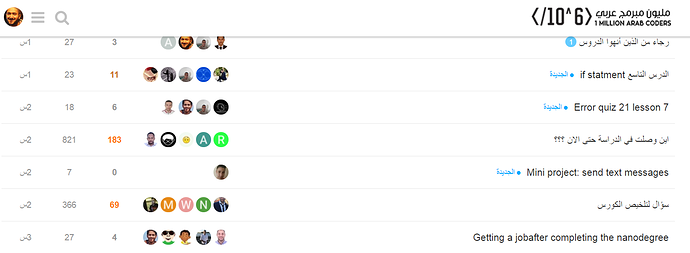

مــقدمـــة
ماهي المشكلة ؟
لاحظت أن بعض الأعضاء يحس بأنه لا يستطيع عمل شيء واقعي لأنه فقط تابع الكورس ولم يمارس… مما أصاب البعض بالإحباط.
أيضاً يحس البعض بأننا في حلبة سباق ويحاول أن ينتهي من الكورس… بدون أن يستوعب المفاهيم كاملة, وهذا يناقض الغرض الأساسي من المبادرة وهو الفائدة !
لذا قررت أن نجعل الأمر واقعي, ونقوم بعمل مشروع كامل من الصفر حتى النهاية.
ماهو المشروع ؟
سيكون المشروع عبارة عن نظام منتدى بسيط جداً… يحاول أن يغطي أغلب المواضيع التي لها أهمية :wink:
مشابه لمنتدى المبادرة:

سنبدأ المشروع بكتابة برمجيات صغيرة وأكواد بسيطة ليكبر إلى أن يصبح موقع بسيط.
حيث سنقوم بتسليم النتائج كل يومين إلى خمسة أيام بشكل متواصل (على موقع GitHub).
يرجى عدم إفساد الحلول بنشرها قبل المدة المطلوبة !
وسأقوم بنشر الحلول كل يومين على المهام المطلوبة منك.
الجميل في الأمر بأنه يمكنك اللحاق بنا في وقت… في حال كنت متأخر
ماهي الخطة ؟
قمت بإعداد هذه الخطة بحيث سنقوم بكل مرحلة سوياً, ويتم التسليم خلال اليوم الأخير من كل نقطة.
(ربما سنحتاج يوم إضافي للمراجعة مع البقية بعد بعض الخطوات)
سنحاول أن نقوم مع بعض بمراجعة ما تعلمناه سوياً بشكل سلس إن شاء الله.
Wire-framing 2 days
Git 3 days
Entities 3 days
Working with data 5 days
Filters 3 days
Designing and Architecture (Side topic) 1 day
Converting our project into a website 3 days
Web Api 3 days
Views (HTML + CSS) 3 days
Agile principles & Early Deployment 3 days
A bit of JavaScript 3 days
Database (Not for sure) 3 days
Deployment 3 days
كيف سنبدأ ؟
سيتم البدء غدأ في المشروع, وسنناقش كيفية مشاركة الحلول على GitHub أولاً… ثم سننتقل إلى كل نقطة ونشاركها وهكذا :smile:
بالتأكيد إن لم تبدأ معنا, فيمكنك اللحاق في أي وقت… ولا يسلتزم منك أن تكون قد انتهيت من الكورس كله للمشاركة
ماهي الأدوات المطلوبة ؟
سنستعمل PyCharm للعمل على المشروع كونه بيئة متكاملة سهل الاستخدام… قمت بعمل فيديوهات مبسطة لكيفية استعماله هنا:
https://macdiscussions.udacity.com/t/sublime-atom-pycharm/77770/
مالمطلوب منك ؟
طبّق, طبّق… ثم طبّق !
ما أتمنى منكم أن تطبقوا ما تتعلموا لكي لا تضيعوا الفرصة التي بين أيديكم :wink:
أرجوا منكم أن تتبعوا التعليمات عندما تشارك: